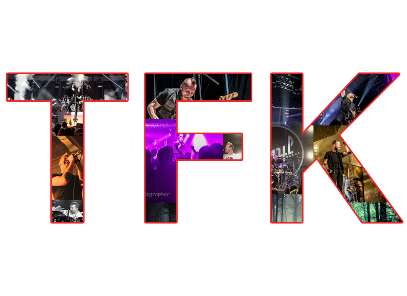

Thousand Foot Krutch
Thousand Foot Krutch (often abbreviated TFK) is a Canadian Christian rock band formed in 1995. Since hitting the scene, Thousand Foot Krutch has been an engine of forward motion through the music industry. In that time the prolific band has released 6 studio albums, 1 live album, and 2 remix albums. Bending genres and styles, their songs have been featured prominently in numerous commercials, sports promos, and film trailers.
Lead single “Let The Sparks Fly,” from their last record The End Is Where WeBegin, could even be heard playing on ESPN, WWE, and during NASCAR races. Their music has consistently been a soundtrack for some of the most adrenaline fueled sports events, video games, and movies over the last ten years.
